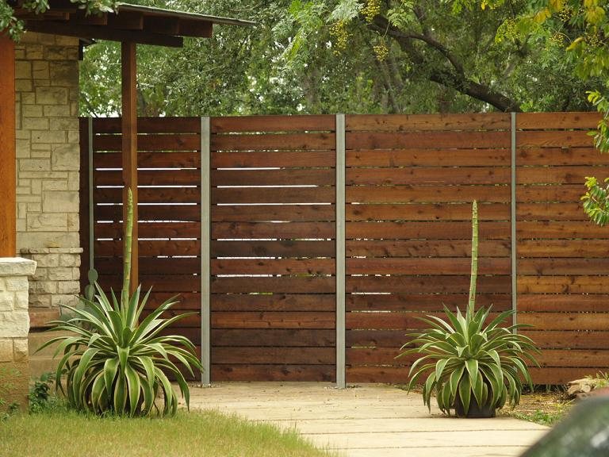

Why Horizontal?
- Looks Cool!
- Durable - If the bottom rots, replace one board instead of all.
- Low Maintenance - Unscrew any board.
- Strength - Heavy guage steel posts and 2x6 Cedar boards instead of 1x4 twigs.
- Custom fit to your home.
To get a Horizontal Fence:
- Call 469.464.6020.
- Mikel will answer the phone or his voice mail will pick up.
- Tell him you want a Horizontal Fence and he will take care of the rest.
- You can also email us:
What's does a Horizonal Fence look like?

Installation in North Oak Cliff, Dallas, TX